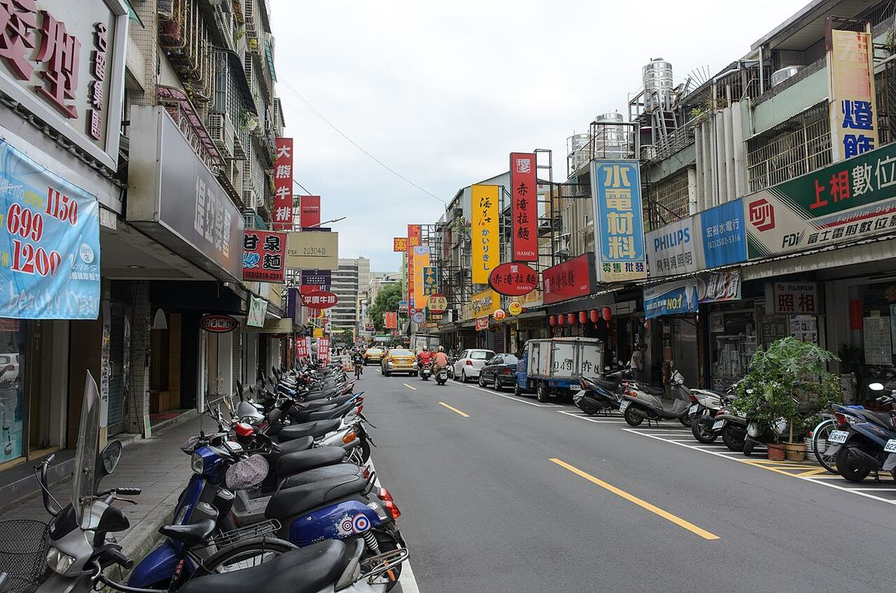
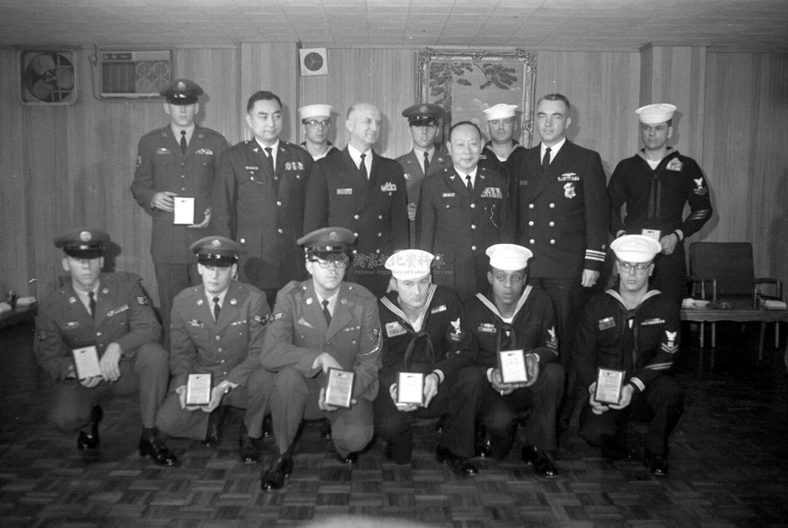
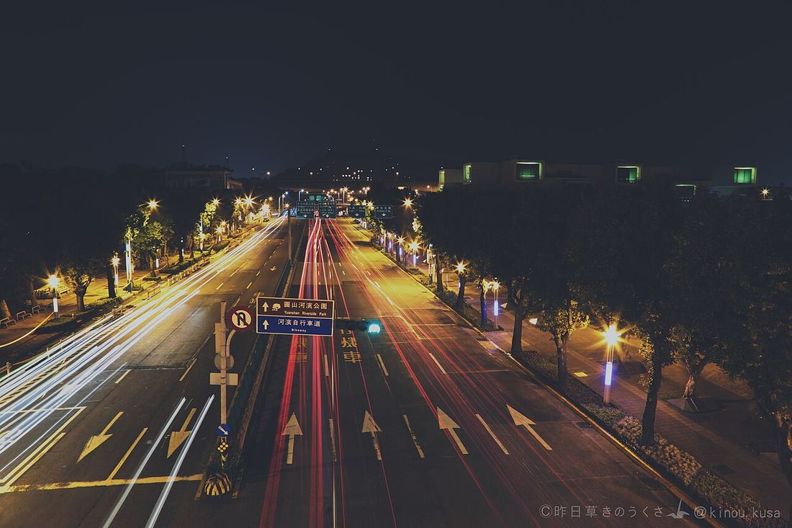

台北老店．中山與東區
中山北路的美軍年代
台北市立美術館那一帶，七十多年前，是一片美軍營區。

一九五一年，美軍顧問團來台，總部就設在中山北路和民族路口。營區裡有宿舍、保齡球館、電影院，還有美軍的百貨商店。
中山北路的酒吧
沿著中山北路往南，西式酒吧一家家開，最早聚在錦州街。
一九六五年起，越戰美軍來台北度假，到一九七二年超過二十萬人次。
一九七七年開的綠門酒吧，到今天還在德惠街營業。
一九七九年美軍撤離，營區拆除，原址後來成了美術館和花博公園。
留下來的西餐
林允修年輕時，在台中的美軍軍官俱樂部當酒保，學會了美式醃牛排。
一九七二年九月，他在台北長安東路的地下室開了亞里士，還仿照美軍俱樂部，用玻璃隔出牛排房。
八十多歲的他，現在還親自烘豆。
專業點：美式咖啡不是美國人天天喝的咖啡
・在義大利，美式咖啡＝濃縮咖啡＋熱水
・美國人天天喝的，是滴濾咖啡
・在美國，滴濾咖啡通常就直接叫 coffee
・林允修教的喝法：先嚐苦味，再加鮮奶油和糖
老照片與街景



店家資訊
- 店家
- 亞里士餐廳
- 地點
- 台北市中山區長安東路一段27號B1
- 現況
- 營業中
- 營業時間
- 常有變動，出發前請再確認
- IG 影片
- 1/22 上片
你吃過哪家有歷史的台北老牌西餐廳？留言告訴我。
到 IG 留言告訴我們
到 IG 留言告訴我們